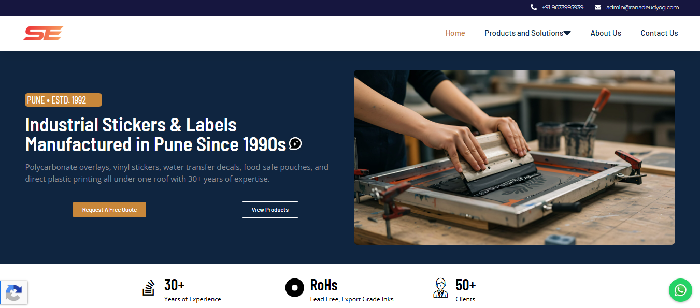

Shree Enterprises
ranadeudyog.com
B2B Manufacturing · Website & GrowthA digital presence for an industrial screen-printing and product-marking business. The work brings together a WordPress website, product-focused SEO, Google Ads planning, and measurement foundations to help industrial buyers discover relevant solutions.
Visit Website →